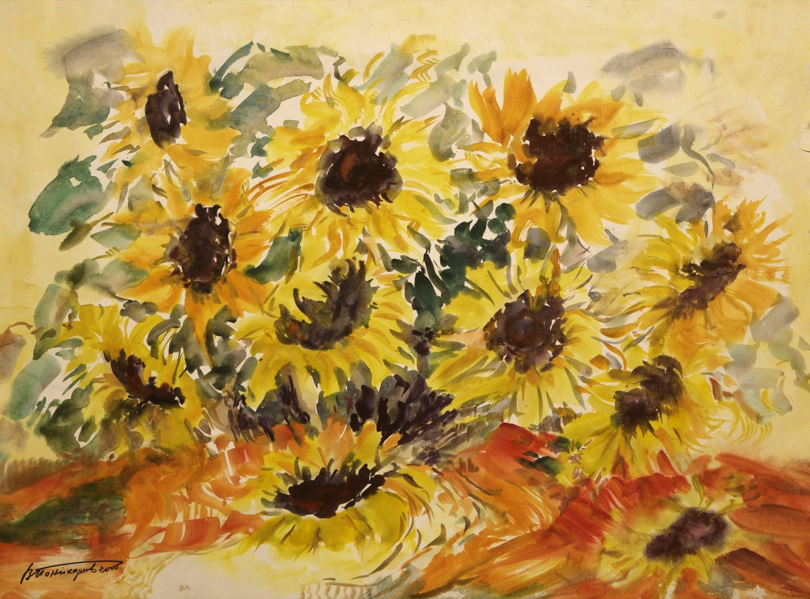
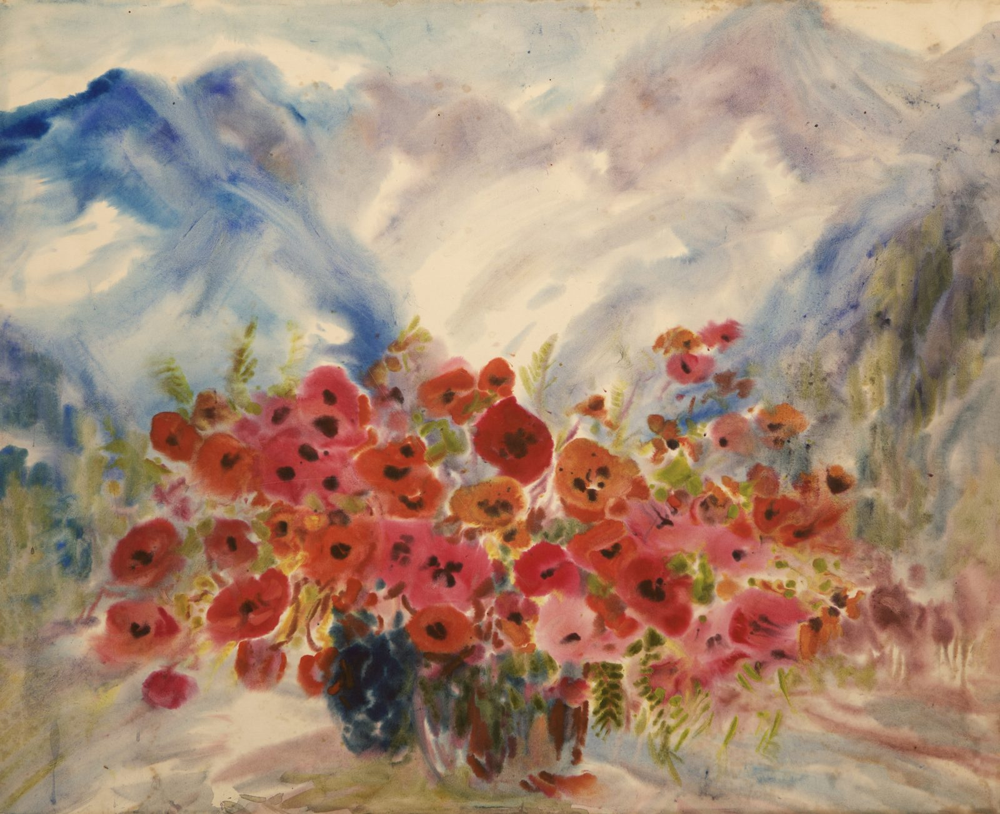
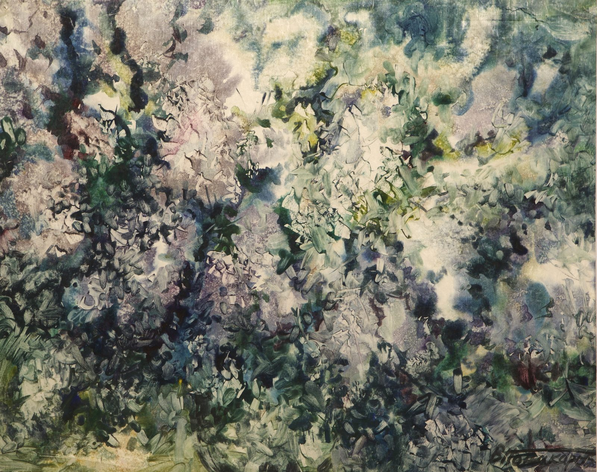
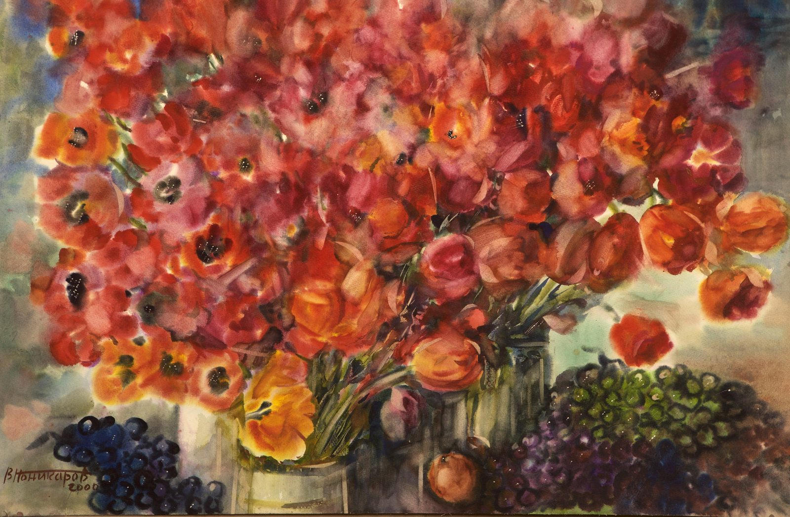
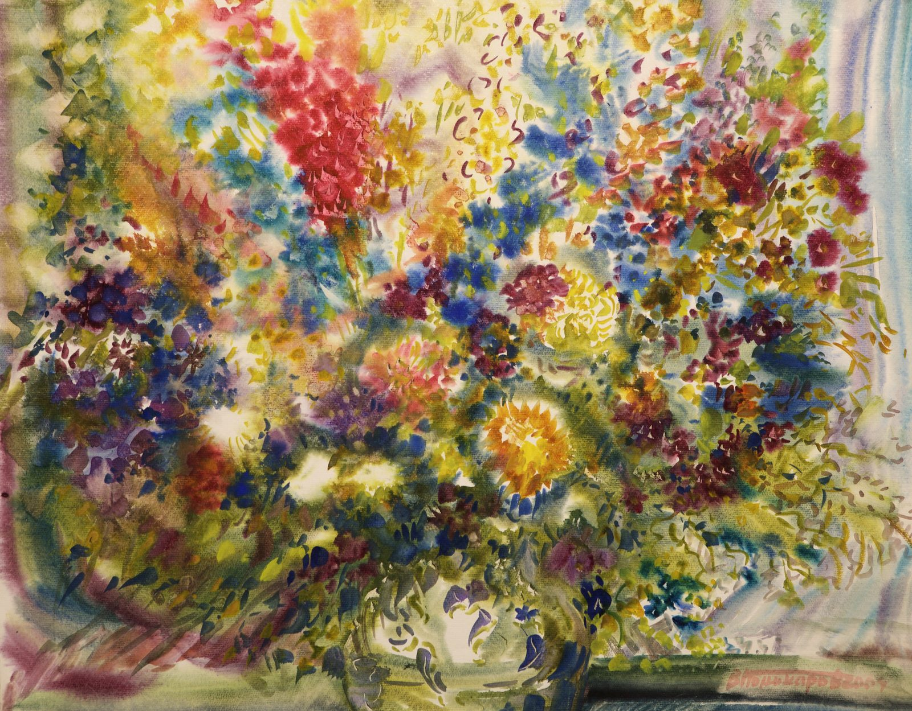
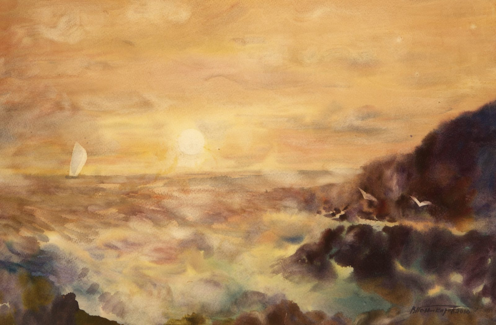
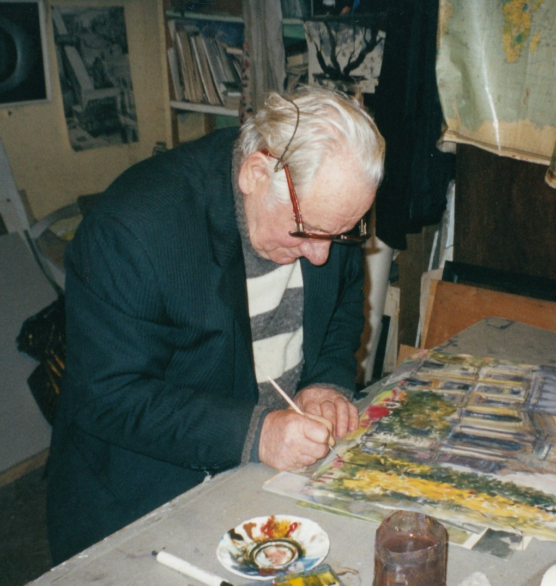

Bouquet of PoppiesFlowers

The Master of Wet-on-Wet
For more than half a century he painted water with water: the Black Sea, the Crimean shore, the flowers of Odesa. Pure wet-on-wet watercolor, in a single sitting and with no white paint.
Vasyl Ponikarov devoted his life to watercolor, the least forgiving of all media. His works are held by museums and private collectors across Europe, Israel and the United States; the studio archive is kept by his family.
“The king of flowers and the emperor of sunflowers.”M. Sherif, art historian, Alexandria
Selected Works
A selection from the family archive. Every work is catalogued with its year, dimensions and condition; titles and dates are being confirmed against the studio catalogue.












Vasyl Andriyovych Ponikarov at work in his Odesa studioThe Artist
Born on 26 August 1929, Vasyl Andriyovych Ponikarov (also written Vasily or Vasiliy Ponikarov) grew up with color: his mother, Yevdokia, painted the stoves and walls of village houses.
He trained at the Grekov Odesa Art School and the Moscow Polygraphic Institute, and joined the Union of Artists of the USSR in 1971. It was a teacher in Odesa who set his course for life:
“You must paint in watercolor. I think it is yours.”Leonid Muchnik, his teacher in Odesa
Grand Prix in Paris in 1999 at an exhibition of private watercolor collections. Honored Artist of Ukraine. He died on 16 May 2014. In 2017 his family gave one of his poppy paintings to the International Watercolor Museum in Fabriano, Italy.
Vasyl Ponikarov (Ukrainian: Василь Андрійович Понікаров; Russian: Василий Андреевич Поникаров; 26 August 1929 – 16 May 2014) was a Soviet and Ukrainian artist, member of the National Union of Artists of Ukraine (1971).
Vasyl Ponikarov was born on 26 August 1929 in the village Dolynske of Ananiv Raion of Odesa Oblast (Ukraine). His childhood coincided with the years of the Second World War. After seven years of schooling, he left his native village. After the end of the war Vasyl continued his studies firstly in the A.S. Makarenko Tiraspol Pedagogical College (1947–1948), lately in the M.B. Grekov Odesa Art school (1949–1958).
In the Art school his pedagogues were M.Y. Zhuk, L.O. Muchnyk, L.O. Tokareva-Aleksandrovych. Leonid Ovsiiovych Muchnyk while getting acquainted with the works of Vasyl advised him: "You should to paint in watercolor. As I think, it's yours".
Ponikarov was called up for military service after the first course in the Art school. He was doing his military service in Yevpatoria. The military base where Vasyl was in the service appreciated a talent of young artist by entrusting to his charge all visual agitation (leaflets, placards). His gift and high appreciation of his effort as an artist culminated in increase of a duration of military service. Vasyl Ponikarov served longer than needed – three and one half years instead of three years. After the demobilisation Vasyl continued his studies within the walls of the same Art school in Odesa .
Three years after graduation from the Art school Vasyl Ponikarov becomes a student of Moscow Polygraphic Institute (1961–1970). Over this years his pedagogues were Y.K. Burdzhelyan, B.A. Sholokhov, G.T. Goroshchenko. Entering of Vasyl into the Artists' Union of the USSR (1971) was recommended by K.M. Lomykin, M.A. Sheliuto, A.L. Yakovlev who remarked considerable growth of mastery of the artist after graduation from the Institute. Background of Vasyl Ponikarov already consisted of art works that had been exposed in all of the USSR.
From 1980 onwards Vasyl Ponikarov painted on journeys on the ocean liner "Fedor Shalyapin", where he served as a staff artist. Like so, the paintings were made, those on which the artist pictured what he saw in Italy, France, Spain, Turkey, Egypt, and Germany.
Landscape painting and still life were genres Ponikarov gave preference to. He painted using the wet-on-wet technique in watercolor on the premoistened paper that deprived dabs of paint of hardness. The artist painted in transparent watercolor, he didn't combine watercolor with other techniques and precluded the use of white paint (titanium dioxide PW6 or zinc oxide PW4) to obtain white color. White color is unpainted paper.
Many of Ponikarov landscape paintings pictured Odesa and its environs since almost all his life was connected with this region. Examples of those works: «Arcadia» (1984), «In Odesa Courtyard» (1984), «Winter on the Big Fountain» (1986), «Odesa. Proletarian boulevard» (1986), «Ilyichyovsk. Lighthouse» (1986). However, Vasyl created a good many of his watercolor paintings on his journeys across Soviet republics and abroad: «Dombay» (1972), «Karelian pines» (1975), «Lake in Sedniv» (1980), «Caucasian birches» (1981), «Rozluch. Carpathians» (1983), «Holosiivo. Ponds» (1984), «Vylkovo» (1987). On journeys that served him as a source of new impressions artworks cycles like «Ancient monuments», «Channel Dnepr-Donbass», «Pushkin reserve», «In Gurzuf» were painted. Cycles of art works painted abroad contain images of Paris, Rome, London, Prague, Barcelona, Budapest, Istanbul, Jerusalem and Cairo.
In landscape painting the artist was evoking motifs of southern Ukraine – juicy, mature vegetables and fruits, vivid flowers. Watercolors of flowers united in series brought him great success. As a "King of flowers and emperor of sunflowers" a fine art expert from Alexandria M. Sheryf named Vasyl. Vasyl Andriiovych worked often on floral compositions by moving up images to the frames of pictures, by approaching images as much as possible to spectators. He pictured flowers in contourless sketchy manner that makes possible to reproduce flowering, rustle, smell.
As a rule, Vasyl Ponikarov worked on location finishing a watercolor painting in one session. Often he turned to work without planning it in advance. For example, departing somewhere on his car, Vasyl could pull up in the middle of the flowering field and turn to paint. Vasyl Andriiovych by creating several sheets a day for a half of century of his creative activity pictured tens of thousands of artworks that dispersed around the world. Ponikarov in Iryna Tymokhova (a fine art expert) opinion is one of the most productive artists. In this regard on the pages of news paper "Vechirnia Odesa" Iryna Tymokhova compared the artist with I.K. Aivazovsky.
Text from the Wikipedia article, CC BY-SA 4.0.
In the press
Tap a clipping to read the whole article
Voyages
From 1980 he sailed as staff artist aboard the ocean liner Fyodor Chaliapin. His travels brought sketches and whole series of harbors and cities.
Piraeus · Rome · Barcelona · Istanbul · Cairo · Paris · London
Swipe or tap a drawing to see it large

The Studio Archive
Landscapes, the sea and the coast, still lifes and flowers, each one numbered, measured and described. The family is preparing the archive for future exhibitions and a catalogue.
In the Collections of
and private collections in France, Belgium, Germany, Italy, Israel, Norway, Latvia and the United States
Contact
For exhibitions, museum loans, research and permissions, please write to the artist's family.
Write to the familyfamily@ponikarov.com